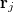
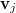
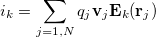
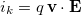

Purpose
This example demonstrates how to compute (and plot) the charge and current induced on an electrode by particles flying in space (i.e. image charge detection). The approach is based on the Shockley-Ramo theorem as implemented in inductionlib.lua.
Theory
The Shockley-Ramo theorem[1-4] states that the induced current on the kth electrode by N particles j=1..N in space of charge qj, position

, and velocity
is
Ek(rj) is the weighting field at position rj. The weighting field represents the geometrical coupling between the free charge at point rj and the kth electrode. Ek is found by solving the Laplace equation ("refining" the potential array) with electrode k set to 1V and all other electrodes to 0V (and no space-charge). We sum over all free charges j.
An alternative form (of which the above is a derivative) gives the induced charge on the kth electrode:
qk = -qj Vk(rj)
Vk is the weighting potential (analogous to the weighting field).
Test Model
As a test, a 2 eV electron in a -47.688984 Gauss magnetic field in the Z direction (normal to the particle velocity) travels clockwise in a circle of radius 1 mm in the XY plane (y between 3 and 5 mm) between two infinite parallel plate electrodes (at y=0 mm and y = 10 mm). (Note: radius = (m/q)v/Bn as noted in Section 2.2.4 of the printed SIMION manual.) Its velocity is 838.76201 mm/usec. The maximum induced current occurs when y=4 mm (velocity fully in the y direction). At this point, the weighting potential is ( 1 - 4 mm / 10 mm) = 0.6, and the weighting field is (1 V / 10 mm) (1/V) = 100 m-1. According to the Shockley-Ramo theorem,

= 1.3438459E-11 (positive when traveling toward the detection electrode; negative when traveling away from it) and qk = -q Vk = 9.61306401E-20 C (positive). SIMION's computed values are 1.3438466E-11 and 9.613065E-20 C respectively, in agreement with the previous result.Usage
How to run demo:
- 1. View parallel_plates.iob. (Click View on main screen and select the parallel_plates.iob file.)
- 2. If this is your first time using the example, you will be asked to refine (confirm that and press Refine).
- 2. Enable Grouped mode. (Check Grouped on the Particles tab.)
- 3. Fly ions. (Click Fly'm.) The particle will trace a circle due to a perpendicular magnetic field. An attached user program (parallel_plates.lua) will measure the induced charge and current on the bottom electrode. The induced charge, induced current, and particle phase (position and velocity) are recorded as a function of time and plotted (e.g. in Excel). Note how the induced current is proportional to the derivative of induced charge. Note how the maximum induced charge and current follow the expected values in the section "Test Model" above.
- 4. Let's now see the effect of increasing current. Fly ions with factor repulsion of 1E+6. (In the Particles tab, under Repulsion, select Fact. and enter 1E+6 in the box below it. Click Fly'm.) Each simulated particle now represents a million actual particles. You'll notice that the induced currents and charges measured are increased accordingly. (You may wish to increase the units_charge_C and units_current_A variables on the Variables tab by a factor of 1E+6 so that the other data plotted on the graph remain visible.)
- 5. Let's now measure induced charge and current from two particles 180 degrees out-of-phase on the circle. Disable charge repulsion, ensure Grouped flying is still enabled, reset adjustable variables, load parallel_plates2.fly2, and Fly'm. (In the Particles tab, under Repulsion, select None. Ensure Grouped is still checked. In the Variables tab, click Reset Values. In the Particles tab, click Define... and Load parallel_plates2.fly2. Click Fly'm.) You can observe in the Particles Define screen that the particle definitions contain two groups each of a single particle. The two particles are 180 degrees out of phase on the circular trajectory. Notice that in the plot, the induced charge has increased and is constant (compared to Step 3). The induced charge (which is proportional to the derivative of the induced charge) is approximately zero. This demonstrates, for example, how in an ICR cell if particles are not at all spationally coherent, you will obtain no current signal.[5]
- For further explanation, examing the source code of parallel_plates.lua. Note how it uses inductionlib.lua, which is how you can use this code in your own simulation. Other things to try include experimenting with different voltages, electrode configurations, and variables (e.g. apply a positive voltage to the top electrode).
How inductionlib.lua Works
This example includes Lua library code (inductionlib.lua) that performs the Shockley-Ramo calculation in an other_actions segment of a user program. See the source code of inductionlib.lua for details. inductionlib.lua observes particle velocities, charges, and weighting potentials/fields, all of which get plugged into the Shockley-Ramo theorem. It uses a fast adjust procedure to measure weighting potentials and weighting fields for specified electrodes and PA instances at the current particle position.
The charges on particles are determined from the particle definitions. If charge repulsion features are used (where each particle traced represents more than one real particle), the represented charge is used (via the ion_effective_charge variable -- Issue I452.3). This works for the point-charge repulsion methods (Factor repulsion and Coulombic repulsion) and might not make sense for Beam repulsion.
See Also
- Example(plot) - Details on plotting library (plotlib) used by this example.
- [1] S. Ramo, Proc. IRE 27, 584 (1939)
- [2] W. Shockley, J. Appl. Phys. 9, 635(1938)
- [3] Wolfgang Nonner, Alexander Peyser, Dirk Gillespie, and Bob Eisenberg. Relating Microscopic Charge Movement to Macroscopic Currents: The Ramo-Shockley Theorem Applied to Ion Channels. Biophys J. 2004 December; 87(6): 3716-3722. http://dx.doi.org/10.1529/biophysj.104.047548 . Also at http://www.pubmedcentral.nih.gov/articlerender.fcgi?artid=1304885 .
- [4] Helmuth Spieler. Semiconductor Detector Systems. Oxford University Press. ISBN:0198527845 http://books.google.com/books?id=G3rSHRzQ8NsC pages 73-.
- [5] Allan G. Marshall, Christopher L. Hendrickson, and George S. Jackson. Fourier Transform Ion Resonance Mass Spectrometry: A Primer. Mass Spectrometry Reviews, Volume 17, Issue 1 , Pages 1 - 35. 1998. http://dx.doi.org/10.1002/(SICI)1098-2787(1998)17:1<1::AID-MAS1>3.0.CO;2-K .
- Steven C. Beu, Christopher L. Hendrickson, Alan G. Marshall. SIMION Modeling of Image Charge Detection in FT-ICR MS. MP10, 212, ASMS2006 poster. (SIMION 7.0 approach)
- Hendrickson, Christopher L. Beu, Steven C. Blakney, Greg T. Marshall, Alan G. "SIMION modeling of ion image charge detection in Fourier transform ion cyclotron resonance mass spectrometry". International Journal of Mass Spectrometry, volume 283, issue 1-3, year 2009, pp. 100-104, doi:10.1016/j.ijms.2009.02.009
- Alexander Misharin, Roman Zubarev. Coaxial multi-electrode FTICR cell for high-sensitivity detection at a multiple frequency: main design and modeling results. MP10, 210. ASMS2006 poster. (applied Shockley-Ramo theorem externally to SIMION 7.0 field calculation) Related paper: http://dx.doi.org/10.1002/rcm.2724 .
- SIMION Examples/Notes:
- Example: ICR (note: current induction could be added to this example)
- Doc: Image Charge Detection
Additional Notes
Independent current measurement on two different electrodes can be handled like this:
simion.workbench_program()
local INDUCE1 = simion.import 'inductionlib.lua'
local INDUCE2 = simion.import 'inductionlib.lua'
INDUCE1.measure { {instance = 1, electrode = 3} }
INDUCE2.measure { {instance = 1, electrode = 4} }
function segment.other_actions()
INDUCE1.other_actions()
INDUCE2.other_actions()
print(INDUCE1.tof, INDUCE1.current, INDUCE1.charge,
INDUCE2.tof, INDUCE2.current, INDUCE2.charge)
end
If you need to sample current periodically (such as to perform an FFT), use Time Markers (on the Partices tab), and enable Data Recording to record data on All Markers. That is a simple way to force time-steps to occur on exact multiples of some period. To get the image current into the Data Recording results, you may add something like "ion_cwf = INDUCE.current" in your other_actions segment, and in Data Recording enable recording of CWF. Assuming that you are not using the charge repulsion features, then it is safe to store arbitrary numbes in the CWF variable like this. You must take care to set this variable at the right time in the other_actions segment; for details see Discussion 1093.
Changes
- 2012-08-18: replace excellib/gnuplotlib with plotlib.
- 2011-02-28 - inductionlib.lua - More efficiently use adjustable electrode solution array memory. Now it only needs to load solutions arrays whose current or charge is measured.
- 2008-05 - initial version.
Source
D.Manura-2008-05.